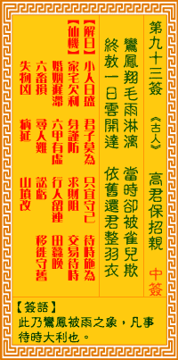

观音灵签第九十三签 【高君保招亲】 |
 | |||
鸾凤翎毛雨压垂 此时应被雀轻欺 忽朝一日云霄霁 依旧还教振羽衣 |
||||
| 【吉凶】 | 中中签 | 【宫位】 | 戌宫 | |
| 【签语】 | 此卦鸾凤被雨之象，凡事待时大利也。 | |||
| 【解曰】 | 小人日盛 君子莫为 只宜守己 待时施为 | |||
| 【仙机】 | 此签家宅欠利，自身谨防，求财阻，交易待时，婚姻迟滞，六甲有虚，行人留连，田蚕晚，六畜损，寻人难，讼亏，移徙守旧，失物凶， 病延，山坟改。 | |||
| 【详解】 | 凤凰身上的羽毛被雨打湿紧垂，在此同时还得承受雀鸟轻慢相欺;待有朝一日天晴大放光明之时，终将再度展翅高飞，依旧在万鸟中称王! 小人正盛，君子莫为，暂时守己，自有亨通。此签未用君子之象，凡事先难后易。 本签示之于弟子曰。未用君子之象。凡事先难。因谋事之敏。终获吉利者也。君汝之目下命。人在穷困之际。啻好屈己忍之。强欢言笑。千万叵急躁恼怒。斯时四 面楚歌。皆陷阱也。易言之。小人正盛君子莫为暂时守己自有亨通之时也。 此签有”邪不胜正”之意。意味当事人，保持冷静。很多现象只是短暂的、表面的，切莫因此灰心丧志。尤其在小人当道之时，千万不可乱了方寸，更不要随波逐 流。对于旁人的明嘲暗讽，何妨忍一时。坚守内心良知认为是对的事，做好份内之事。表面上也许是强颜欢笑，但内心依然保持自我的清明，相信自己做的任何事 ，都是本应如此，没有对不起自己，也没有对不起任何人。 | |||
| 【典故】 | 高君保即高俊保，是宋朝高德怀的儿子。宋太祖赵匡胤征南唐被困，高君保运粮食前往解救，路过双锁山，被女大王刘金定劫持上山，强 迫结为夫妻。《宋太祖征南唐》故事 | |||